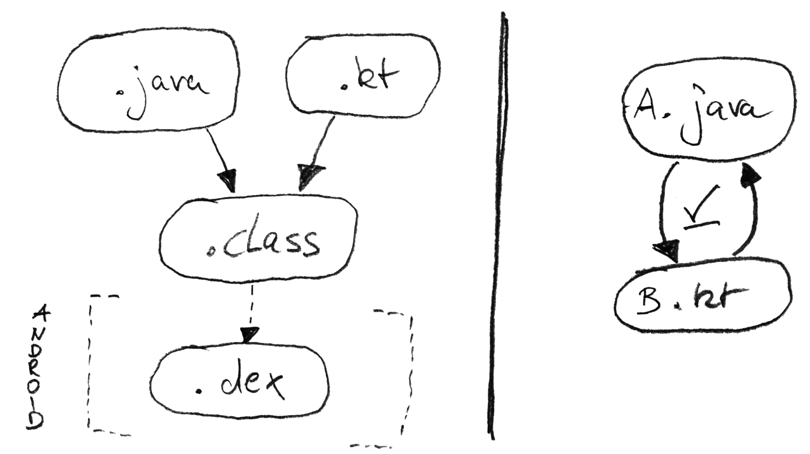
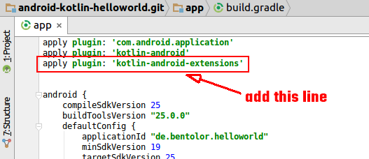
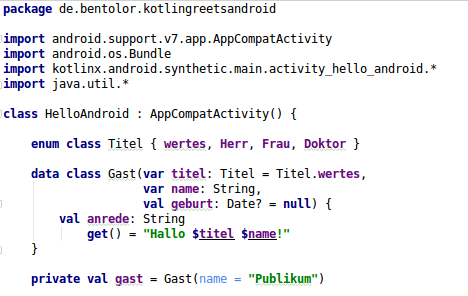
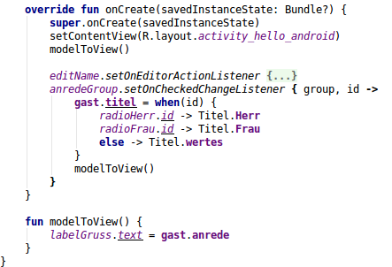

ist auch nur eine
Insel!
Effiziente & sichere JVM-Entwicklung mit Kotlin
Russische Insel
im finnischen Golf, 32km vor Petersburg
statisch typisierte
Allzweck-
Sprache für
- JVM
- Javascript
- Native (LLVM)
Datenblatt
Freie Software
APL 2.0 – IDE, compiler, libs, build tools
Stabil & LTS
Start: ~2010, v1.0 Feb. '16
Long-term backward compatibility
JetBrains (& Google)
20+ Vollzeit & Community
„dogfooding“ & Android
Integrationen
IntelliJ, Android Studio, Eclipse,
Maven, Ant, Gradle, CLI
Historie
Februar 2016 – 1.0
Production-ready, LTS version
April 2017 – 1.1
Coroutines, Type Aliases, JS, Android
Mai 2017 – Android
Google integriert Kotlin in Android
November 2017 – 1.2
Multiplattform-Support
November 2018 – 1.3
Contracts, Unsigneds, Inline Classes
August 2020 – 1.4
SAM conversions, API mode
Mai 2021 – 1.5
JVM Records, Sealed/Inline Classes
November 2021 – 1.6
type inference & coroutines improvements
Juni 2022 – 1.7
K2 Compiler, Builder Inference
Prägnanz & Lesbarkeit
Hands on: play.kotlinlang.org
Prägnanz vs. Lesbarkeit
import java.util.*
fun main(args: Array<String>) {
val name = if (args.size > 0) args[0] else "Publikum"
val zuschauer = Gast(name, title = Title.wertes)
println(zuschauer)
println("Hallo ${zuschauer.title} ${zuschauer.name}")
}
data class Gast(val name: String,
var zeit: Date = Date(),
val title: Title?)
enum class Title { Herr, Frau, wertes }
← Optional semicolons
← Top-level functions
← Kein new,
named Params
← String interpolation
← Default values
← val ≙ public final
Type inference
Typangaben üblicherweise nur an Schnittstellen erforderlich
Data Classes
... exakt dasselbe mit Java
public final class Gast {
@NotNull
private final String name;
@NotNull
private Date zeit;
@Nullable
private final Title title;
@NotNull
public final String getName() {
return this.name;
}
@NotNull
public final Date getZeit() {
return this.zeit;
}
public final void setZeit(@NotNull Date date) {
checkParameterIsNotNull(date, "<set-?>");
this.zeit = date;
}
@Nullable
public final Title getTitle() {
return this.title;
}
public Gast(@NotNull String name,
@NotNull Date zeit,
@Nullable Title title) {
checkParameterIsNotNull(name, "name");
checkParameterIsNotNull(zeit, "zeit");
this.name = name;
this.zeit = zeit;
this.title = title;
} public Gast(String string, Date date,
Title title, int n) {
if ((n & 2) != 0) {
date = new Date();
}
this(string, date, title);
}
@NotNull
public final String component1() {
return this.name;
}
@NotNull
public final Date component2() {
return this.zeit;
}
@Nullable
public final Title component3() {
return this.title;
}
@NotNull
public final Gast copy(@NotNull String name,
@NotNull Date zeit,
@Nullable Title title) {
checkParameterIsNotNull(name, "name");
checkParameterIsNotNull(zeit, "zeit");
return new Gast(name, zeit, title);
}
public String toString() {
return "Gast(name=" + this.name +
", zeit=" + this.zeit +
", title=" + this.title + ")";
}
public int hashCode() {
String s = this.name;
Date d = this.zeit;
Title t = this.title;
return ((s != null ? s.hashCode() : 0) * 31
+ (d != null ? d.hashCode() : 0)) * 31
+ (t != null ? t.hashCode() : 0);
}
public boolean equals(Object object) {
if (this == object) return true;
if (!(object instanceof Gast))
return false;
Gast gast = (Gast)object;
if (!areEqual(this.name, gast.name)
|| !areEqual(this.zeit, gast.zeit)
|| !areEqual(this.title, gast.title))
return false;
return true;
}
}… 3 Attribute!
Properties
- Klassen in Kotlin kennen keine Felder, nur Properties
- Compiler generiert Getter- & Setter sowie Backing Field

getX()/setX()-Paare
aus Java erscheinen
als Propertyx- Properties unterstützen Delegation
Ausdrücke & Konventionen
Mehr Ausdrücke (if, ?:, ?., …)
Pattern matching (when)
String Templates
Syntactic Sugar
listOf(…), repeat(3){…},
with(x){…}, x.apply{…}, …
public sind Default
kein new – ; optional
Operatoren & Dekomposition über Namen
Ausdrucksstärke
Standard-Bibliothek
Konventionen
Sicherheit
First-class immutables
Nur-lesbare Variablen
aufwandsfrei durch val statt var
Standard-Collection Interfaces (List, Set, …) sind read-only
Zum ändern muss man z.B. MutableList statt List nutzen
Klassen & Methoden sind final by Default
open class ExtendableClass {
open fun overridableMethod() { … }
}
class Derived: ExtendableClass() {
override fun overridableMethod() { … }
}… Framework-Entwickler müssen Acht geben!
The
billion-dollar
mistake
null und seine Folgen
Nullwert-Sicherheit
Nur explizit Nullwert-fähige Typen
akzeptieren null.
Ungeprüfte Zugriffe führen zu Compile-Fehlern!
Nullwerte sind Bestandteil
des Typsystems!
An den Schnittstellen baut Kotlin
Prüfungen & @NotNull Annotationen ein.
Effizienter Umgang mit Nullwert-Typen
Effizienter Umgang mit Nullwert-Typen
Interoperabilität
Java/Kotlin Interop
Mischen von Java & Kotlin-Code
bei problemlosem, gleichzeitigen Zugriff in beide Richtungen
null-Werte aus Java-Code
Alle Rückgabewerte aus Java-Code als T? zu verstehen wäre richtig,
aber extrem
unkomfortabel. Kotlin setzt daher auf Platform Types T!.
↓
Java → Kotlin: Beispiel static-Feld
Tooling
Tooling: Design Goals
Automatische Konvertierung
Java → Kotlin
Effizienz & Idiome

Extension methods & properties
Fremde Klasse um Methoden ergänzen
fun Fragment.toast(message: String, duration: Int = Toast.LENGTH_SHORT) {
Toast.makeText(this.getActivity(), message, duration).show()
}Fremde Klasse um Properties ergänzen
var EditText.stringValue: String
get() = text.toString()
set(str) { setText(str) }Verwendung
toast("Hallo Zuschauer!")
nameField.stringValue = "Max Muster"Utilities „frei Haus“
val list = listOf("a", "b", "c")
for (index in list.indices.filter { it % 2 == 0 }) {
println("$index -> ${list[index]}")
}
List<String> list = Arrays.asList("a","b","c");
for (int index = 0; index < list.size(); index++) {
if (index % 2 == 0)
System.out.println(index + " -> " + list.get(index));
}Kotlin
& Android
+ – Ein Dream-Team?
- effiziente & fehlerarme Entwicklung
- konzipiert für den industriellen Einsatz
- erzeugt Java 8 Bytecode – perfekt für Android
- 100% Java Interoperabilität – in beide Richtungen …
- Tooling-Heimspiel – Android Studio & Gradle 3 setzen auf Kotlin
- Aber: Overhead stdlib & Properties-Methoden
Im Mai 2017 – die Antwort
on speed
Typischer Android-Boilerplate ...
EditText editTitle = (EditText) v.findViewById(R.id.edit_title);
editTitle.setText(mItem.getTitle());
CheckBox enabledBox = (CheckBox) v.findViewById(R.id.enable_box);
enabledBox.setChecked(true);
Button createButton = (Button) v.findViewById(R.id.create_entry);
createButton.setOnClickListener(new OnClickListener() {
@Override public void onClick(View button) {
createElement();
}
});… ständige Lookups & Typecasts von Views über findViewById().
Kotlin Extensions aktivieren
Virtuelle Properties
für UI-Elemente
Das Kotlin Android Extensions erzeugt virtuelle mylayout.xml-Pakete
import kotlinx.android.synthetic.main.mylayout.*edit_title.setText(mItem.title)
enable_box.isChecked = true
create_entry.setOnClickListener { createElement() }
Ein einfacher Import erlaubt typsicheren Zugriff auf alle
darin enthaltene View-Elemente direkt als simples Property.
Ohne zusätzlichen Code, Annotations oder Runtime!
Hello Android: Code part #1
Hello Android: Code part #2
– Advanced
Funktionen als
first-class elements
Funktionen sind Sprachelemente erster Klasse und können daher auch als Variablen, Properties, Parameter und Rückgabewerte genutzt werden.
Durch Verschachtelung lassen sich Funktionen höherer Ordnung (Higher-order functions) erschaffen
Higher-order functions – Beispiel
class FirstClassFunction(
val f1: (String) -> Int,
val f2: (Int) -> Boolean) {
fun strToBool(str: String): Boolean {
val f: (String) -> Boolean = higherOrderFun()
return f(str)
}
private fun higherOrderFun(): (String) -> Boolean {
return { x -> f2(f1(x)) }
}
}
fun main(args: Array<String>) {
val c = FirstClassFunction(
Integer::parseInt,
{ it % 2 == 0 }
)
val strings = listOf("2", "7", "8")
println(strings.map(c::strToBool))
}
← Funktion als Parameter
← Funktion als Variable
← Funk. als Rückgabewert
← Kombination via Lambda
← Funk.-Referenz
← Lambda-Ausdruck
→ Was kommt raus?
Lambdas – Syntactic sugar
view.setOnClickListener({ e -> doSomething(e) })↓
view.setOnClickListener() { e -> doSomething(e) }↓
view.setOnClickListener { e -> doSomething(e) }↓
view.setOnClickListener { doSomething(it) }Typsichere DSLs über „Empfänger“-Objekt
Es ist möglich, Funktionssignaturen zu definieren, die Lambda-Ausdrücke
erwarten bei denen this auf Zielobjekte eines bestimmten Typs zeigen.
Darüber sind typsichere DSLs möglich:
← Erwartet Funktion mit this
vom Typ HTML
← Erstellung des receiver object
← Führe Lambda auf receiver object aus
← Kurzform von html({…})
← Lambda-Ausdruck für einen HTML-„Empfänger“
Gradle Kotlin DSL – build.gradle.kts
Operatoren
Über Namenskonventionen. Feste Menge & Präzedenz
GUI & null – Typische Konstellation
Lösungen: Verzögerte Initalisierung
Infix Notation
Fazit
Im Browser ausprobieren
Lernen: Kotlin Koans

Quellen & Materalien